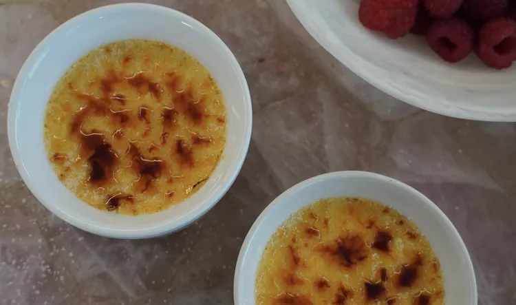

Crème Brûlée

Description
This classic crème brûlée recipe is on par with what you'd get at a 5-star restaurant, but it's surprisingly easy to make at home.
Ingredients
- Egg yolks: This classic crème brûlée recipe starts with egg yolks, ensuring a rich dessert.
- White sugar: You'll need six tablespoons of white sugar — four for the custard and two for the caramelized topping.
- Vanilla: A dash of vanilla extract adds complexity and enhances the overall flavor of this crème brûlée.
- Cream: Heavy whipping cream is whisked into the egg yolks over low heat until nice and thick.
- Brown sugar:A blend of white and brown sugars is sprinkled over the custard and broiled until perfectly caramelized.
Steps
- Make the custard
- Bake and chill the custard
- Caramelize the sugar